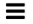

要求變更文件
要求變更文件 編輯此頁面
編輯此頁面 瞭解如何作出貢獻
瞭解如何作出貢獻使用SolidFire Active IQ 這個功能
貢獻者
深入瞭解中的UI功能 "（需要登入）SolidFire Active IQ"：
-
filters
-
lists
-
graphs and select date ranges
-
list views and report data
-
a cluster
-
reference
-
feedback
使用篩選條件
您可以排序及篩選SolidFire Active IQ 有關頁面的清單資訊。檢視清單（例如節點、磁碟機、磁碟區等）時、您可以使用篩選功能來聚焦資訊、使其更容易放入螢幕。
-
檢視清單資訊時、請選取*篩選*。
-
從下拉式功能表中選擇要篩選的欄名稱。
-
為欄選取限制。
-
輸入要篩選的文字。
-
選取*新增篩選器*。
系統會針對清單中的資訊執行新的篩選、並暫時儲存新的篩選器。選取的篩選條件會顯示在篩選對話方塊的底部。
-
（選用）您可以執行下列步驟來新增其他篩選：
-
選取另一個欄標題和限制。
-
選取*新增篩選器*。
-
-
（選用）選取（* x*）以移除篩選條件、並顯示未篩選的清單資訊。

|
有些表格包含從檢視中排除欄的選項。若要獲得最佳結果、請選取*「欄」*、確認設定篩選時顯示所有必要的欄。 |
排序清單
您可以在SolidFire Active IQ 某些頁面上、根據一或多個欄來排序清單資訊、這些欄位位於UI的特定頁面上。這有助於您在螢幕上安排所需的資訊。
-
若要依單一欄排序、請選取欄標題、直到資訊依照所需順序排序為止。
-
若要依多欄排序、請執行下列步驟：
-
選取您要排序的第一欄的欄標題、直到資訊依照所需的順序排序為止。
-
若要新增欄位、請按住命令鍵並選取欄位標題、直到資訊依照所需的順序排序為止。您可以新增多個欄。
並非所有頁面都提供此功能。
-
檢視圖表並選取日期範圍
在整個過程中、圖表和日期範圍SolidFire Active IQ 彼此無縫整合。選取日期範圍時、該頁面上的所有圖表都會調整至所選範圍。每個圖表顯示的預設日期範圍為七天。
您可以從行事曆下拉式方塊或一組預先定義的範圍中選取日期範圍。日期範圍是使用目前瀏覽器時間（選取時間）和設定的時間量來計算。此外、您也可以直接在底部的長條圖上塗抹、以選取所需的時間間隔。如果可用、請選取左側的縮圖配置、在圖表之間切換。這些配置也可以隱藏。
將滑鼠指標放在圖形線上、以查看時間點詳細資料。

匯出清單檢視和報告資料
您可以將整個清單檢視或圖表資料匯出成以逗號分隔的值（CSV）格式。對於某些清單、例如叢集或節點、您可以選取要匯出的欄位；預設會選取顯示的欄位。如果有特定的排序順序、或是使用篩選器來限制顯示的項目、則會將該排序順序和篩選器保留在匯出的檔案中。
-
在清單檢視或圖表中、選取
 圖示。
圖示。
選取叢集
在本指南中、您可以檢視環境中個別叢集的相關資訊。SolidFire Active IQ
-
從「Se儀表板」選取*「Select a Cluster"（選擇叢集）*。SolidFire Active IQ
-
下拉式功能表會列出您可用的任何叢集。
-
使用搜尋欄位來尋找所需的叢集或最近檢視的叢集。
-
選取名稱以選取叢集。
圖示參考
您可能會看到下列圖示、以供檢視SolidFire Active IQ 畫面的功能。
| 圖示 | 說明 |
|---|---|
|
重新整理 |
|
篩選器 |
|
匯出 |
 |
帳戶設定、文件、意見反應、支援及登出的功能表。 |
|
選取一次以複製到剪貼簿。 |
|
切換按鈕以換行和取消換行。 |
|
更多資訊：選取以取得其他選項。 |
|
請選取以取得更多詳細資料。 |


提供意見回饋
您SolidFire Active IQ 可以使用整個UI都可存取的電子郵件意見反應選項、協助改善此功能並解決任何UI問題。
-
從UI的任何頁面中、選取 圖示、然後選取*意見反應*。
-
在電子郵件的訊息本文中輸入相關資訊。
-
附上任何實用的螢幕擷取畫面。
-
選取*傳送*。